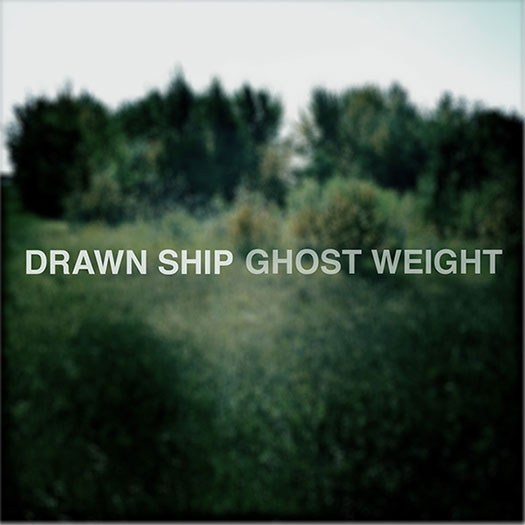

The Blame
Ghost Weight
Update Required
To play the media you will need to either update your browser to a recent version or update your
Flash plugin
.
Drawn Ship

Release Date: 10/22/13
Release Date: 9/6/11